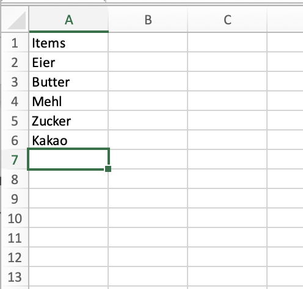
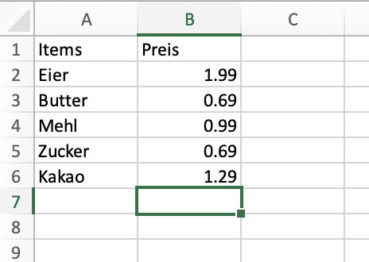
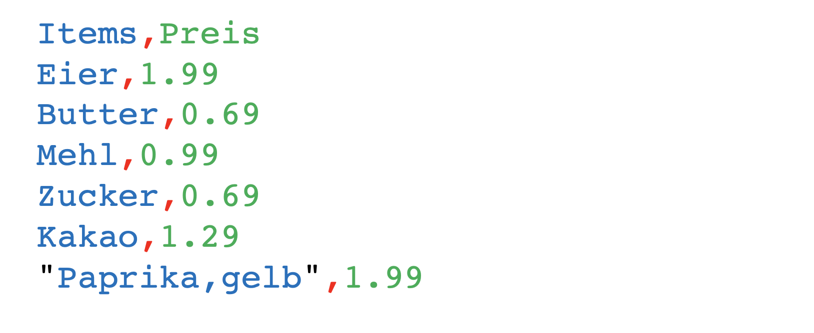
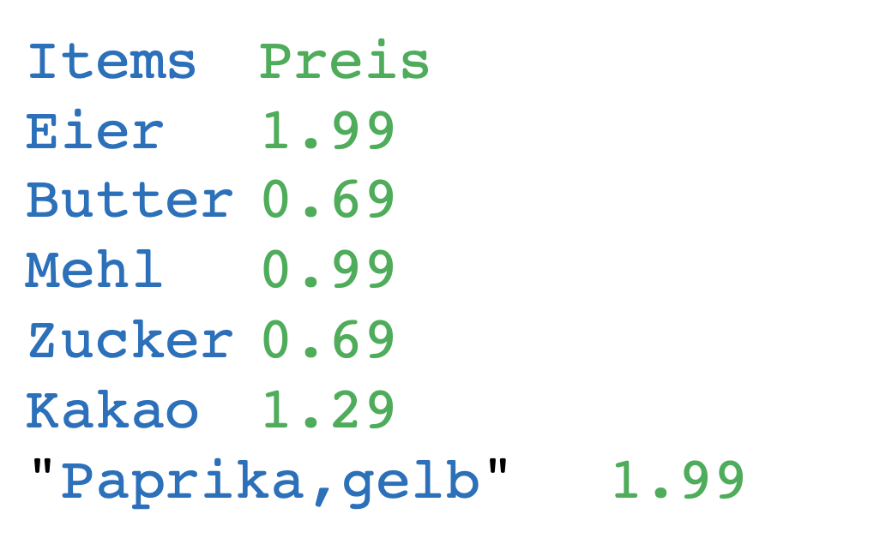
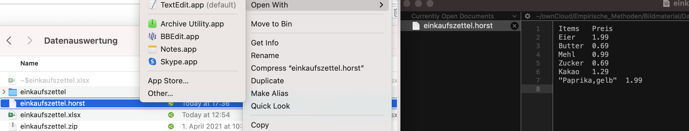
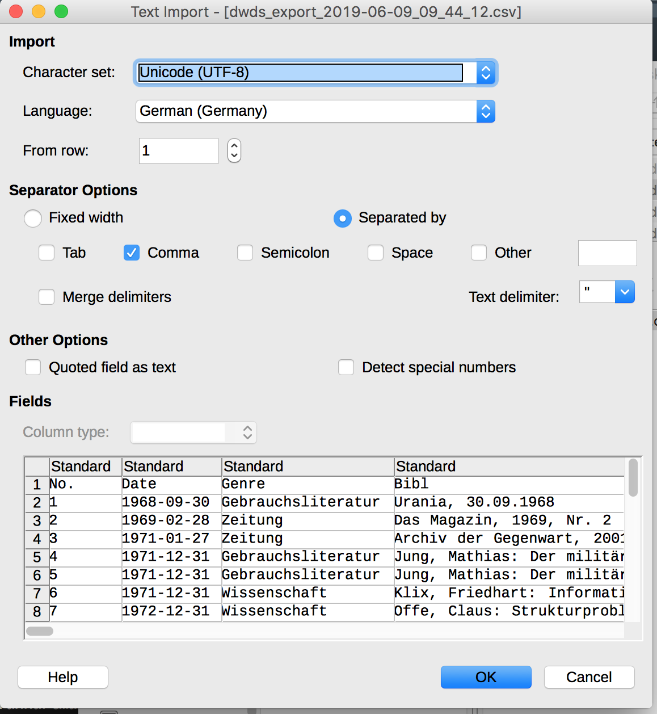
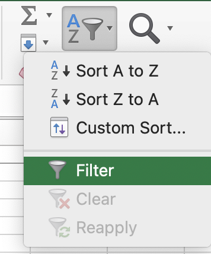
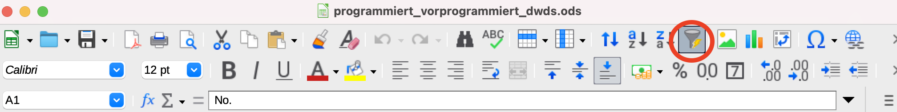
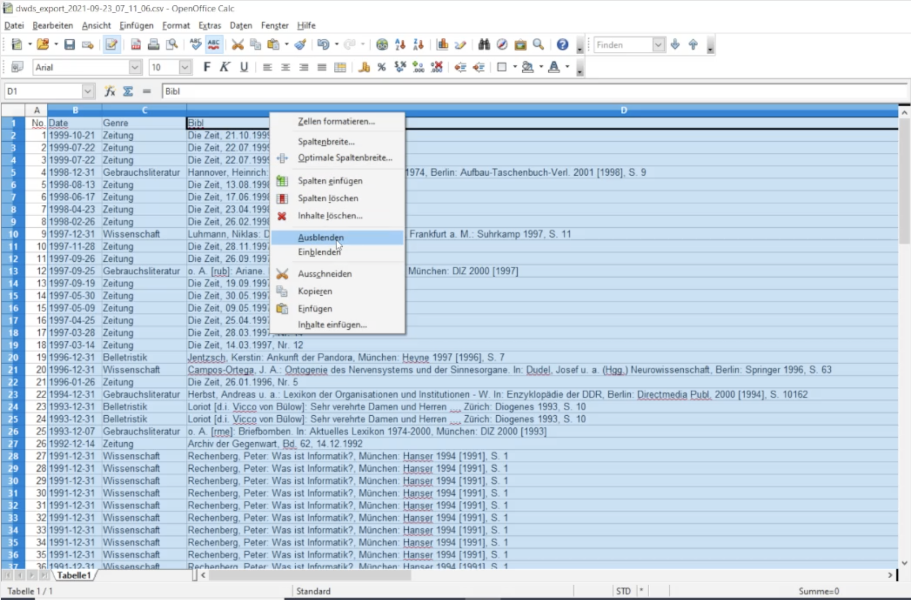
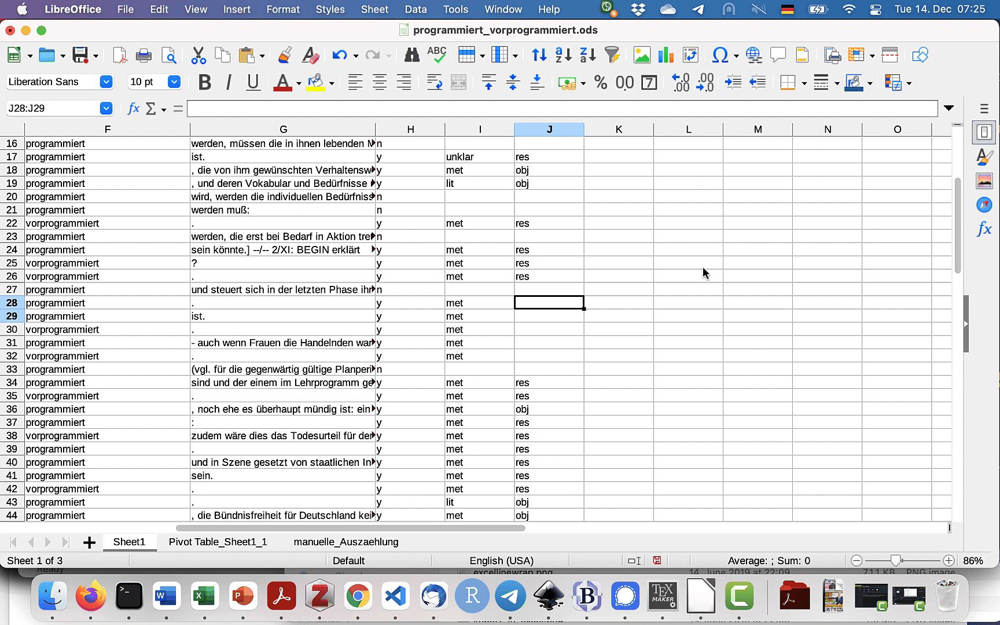

Datenaufbereitung und -auswertung
An dieser Stelle des Tutorials wissen Sie bereits, wie man Daten gewinnt – etwa durch eine Korpusrecherche oder eine Fragebogenstudie. Sie haben dadurch schon erste Erfahrung im Umgang mit Daten gesammelt. Im Idealfall liegen Ihre Daten auch schon in einem übersichtlichen und einfach auswertbaren Format vor. Aber in welchem Format sollten unsere Daten überhaupt vorliegen, damit wir sie möglichst gut analysieren können? Und mit welcher Software können wir unsere Daten analysieren? Diesen Fragen wollen wir in diesem Tutorial nachgehen.
Tabellenkalkulationsprogramme und Spreadsheets
Wenn Sie mit Daten arbeiten, werden Sie in der Regel nicht umhin kommen, ein Tabellenkalkulationsprogramm zu nutzen (außer Sie können programmieren). Wir werden im Folgenden mit zwei Tabellenkalkulationsprogrammen arbeiten: Erstens Microsoft Excel, weil es die wahrscheinlich bekannteste und verbreitetste Software zur Bearbeitung von Spreadsheets ist; zweitens LibreOffice Calc, weil es für alle, die keine Excel-Lizenz haben, eine kostenlose und im Blick auf den wesentlichen Funktionsumfang vergleichbare Alternative darstellt.
Dabei sollten wir uns aber zunächst verdeutlichen, dass auch die beste Software immer nur ein Hilfsmittel sein kann. Bevor wir uns in die Programme vertiefen, schauen wir uns zunächst an, was eigentlich ein (gutes) Spreadsheet ausmacht.
Spreadsheets: menschenlesbar, maschinenlesbar
Wenn wir an Excel-Tabellen denken, haben wir vielleicht zunächst einen großen, unübersichtlichen Datenwust vor Augen. Das ist wenig hilfreich, wenn wir verstehen wollen, wie man gut mit solchen Tabellen arbeitet. Denken wir daher lieber an etwas Anderes – etwa an einen Einkaufszettel.
Letztlich ist auch ein Einkaufszettel einfach ein Datensatz. Wir können ihn theoretisch in eine Excel-Tabelle einpflegen:
Das bringt zwar zunächst nicht viel, kann sich aber als nützlich erweisen, wenn wir weitere Informationen hinfügen wollen, z.B. den Preis:
Wenn wir empirisch arbeiten, haben wir es in aller Regel mit solchen mehrdimensionalen Daten zu tun. Es handelt sich also nicht um bloße unstrukturierte Listen, sondern um strukturierte Datensätze, die aus mehreren Variablen bestehen. Das ist schon deshalb so, weil sich ja wissenschaftliche Fragestellungen, wie wir gesehen haben, dadurch auszeichnen, dass sie sich in “Je-desto”- bzw. “Wenn-dann”-Sätze umformulieren lassen. Wir sind also meistens an mindestens zwei Variablen interessiert – außer wenn wir rein explorativ arbeiten; in diesem Fall könnten wir auch versuchen, in einer Sammlung von sehr vielen Einkaufszetteln wiederkehrende Muster zu erkennen, die uns Aufschluss über das Einkaufsplanungsverhalten der betroffenen Personen geben können.
Ein wesentlicher Unterschied zwischen einem einfachen Einkaufszettel und den meisten Datensätzen, mit denen wir in der Linguistik und in anderen empirischen Wissenschaften arbeiten, besteht darin, dass Letztere meist erheblich größer sind und oft viel zu umfangreich, als dass man sie manuell auswerten könnte. In solchen Fällen ist es wichtig, dass die Spreadsheets, mit denen wir arbeiten, nicht nur menschenlesbar, sondern auch maschinenlesbar sind. Das ermöglicht eine automatisierte Auswertung, sei es mit Tabellenkalkulationsprogrammen wie Excel und Calc selbst oder mit Programmen wie R oder Python (auf R gehen wir an anderer Stelle in diesem Tutorial ein). Deshalb wollen wir uns bei den Tabellen, mit denen wir im Folgenden arbeiten, an ein einfaches Prinzip halten:
- Eine Variable = eine Spalte,
- ein Datenpunkt = eine Zeile,
- eine Beobachtung = eine Zelle.
Der neuseeländische Data Scientist Hadley Wickham spricht hier auch von “Tidy Data”. Die Vorteile des “Tidy Data”-Prinzips werden gleich noch deutlicher werden, wenn wir uns an die praktische Datenauswertung machen. Bleiben wir aber zunächst noch kurz beim Beispiel unseres Einkaufszettels. Um ihn in einem Tabellenkalkulationsprogramm auswerten zu können, müssen wir ihn zunächst in ein Spreadsheet-Format “gießen”.
Ein sehr häufig verwendetes Format für Spreadsheets ist das CSV-Format. CSV steht für Comma-Separated Values und enthält genau das, was der Name besagt: komma-separierte Werte.
Schauen wir uns die Struktur einer solchen CSV-Datei kurz genauer an, denn wir werden in diesem Tutorial immer wieder mit CSV-Dateien arbeiten. CSV-Dateien sind zunächst einmal einfach Textdateien: Man kann sie mit jedem beliebigen Texteditor öffnen. Das ist ein großer Vorteil gegenüber anderen Formaten, die nur mit einer ganz speziellen Software geöffnet und bearbeitet werden können. Als Spaltentrenner fungiert – Überraschung! – das Komma, mit anderen Worten: das Komma zeigt in jeder Zeile die Spaltengrenze an. Was aber, wenn innerhalb einer Tabellenspalte ein Komma steht? Dafür gibt es in der entsprechenden Zeile Anführungszeichen, die als sogenannte Textqualifizierer dienen – das heißt, sie zeigen an, dass der Text, der zwischen dem öffnenden und schließenden Anführungszeichen steht, zusammengehört.
Typischerweise werden bei CSV-Dateien Kommata als Spaltentrenner und Anführungszeichen als Textqualifizierer verwendet. Das ist aber nicht zwingend, prinzipiell sind auch andere Zeichen möglich. Häufig werden zum Beispiel auch Tabstopps als Spaltentrenner verwendet:
In diesem Fall spricht man auch von Tab-Separated Values, kurz TSV, weshalb die Dateiendung der entsprechenden Dateien in diesem Fall manchmal auch .tsv lautet. Das muss aber nicht zwingend der Fall sein: Eine Datei mit tab-separierten Werten kann dennoch die Endung .csv oder auch eine andere Endung wie einfach .txt haben. Wie oben schon gesagt, handelt es sich letztlich einfach um Textdateien, und prinzipiell kann die Datei auch einkaufszettel.horst heißen...
... und lässt sich mit entsprechenden Programmen wie Notepad++, BBEdit und anderen Texteditoren problemlos öffnen. Die Dateiendung ist einfach nur ein Label, eine Art Etikett, sie sagt nichts darüber aus, wie eine Datei “under the hood”, also quasi von innen, aussieht. (Deshalb ist es ja auch so einfach, Schadprogramme zu tarnen, indem man ihnen gängige Dateiendungen gibt, aber das nur nebenbei.)
Wenn wir ein Spreadsheet, das in einem Format wie CSV oder TSV vorliegt, in einem Tabellenkalkulationsprogramm öffnen wollen, ist es hilfreich zu wissen, welche Spaltentrenner und welche Textqualifizierer die Datei verwendet. Das wird wichtig, wenn wir die Daten in einem Tabellenkalkulationsprogramm öffnen wollen. Diesem Schritt wollen wir uns nun zuwenden.
Import in ein Tabellenkalkulationsprogramm
Wenn Sie Microsoft Excel auf Ihrem Rechner installiert haben, sind die Default-Einstellungen höchstwahrscheinlich so gesetzt, dass CSV-Dateien in Excel geöffnet werden, wenn Sie darauf doppelklicken. Warum das nicht immer eine gute Idee ist, zeigt der folgende Screenshot (rote Hervorhebungen von uns nachträglich hinzugefügt).

Hier sind einige Sonderzeichen verloren gegangen, weil Excel die Kodierung der geöffneten Datei nicht richtig erkannt hat. Es gibt mehrere Wege, diesem Problem zu begegnen. Wir sehen uns nun zwei an, je nachdem, welches Tabellenkalkulationsprogramm Sie installiert haben: einen Weg für Excel und einen für die freie Alternative Calc.
Import in Excel
- Öffnen Sie die Datei in einem Texteditor. Für Windows empfiehlt sich Notepad++, für Mac die kostenlose (und für unsere Zwecke völlig ausreichende) Version von BBEdit, für Linux gibt es z.B. Notepadqq.
- Markieren Sie mit Strg+A bzw. Cmd+A den gesamten Text.
- Öffnen Sie ein leeres Tabellenblatt in Excel. Die nächsten Schritte, 4 bis 7, sind in 2.4 visualisiert.
- In den meisten Fällen sollten Sie nun einfach mit Strg+V bzw. Cmd+V die Daten einfügen können. In manchen Fällen müssen Sie jedoch, wie im Screencast 2.4, die Option “Paste Special” verwenden (dt. “Inhalte einfügen”) und angeben, dass Sie den Unicode-Text einfügen möchten.
- Mit Klick auf das kleine Klemmbrett-Symbol gelangen Sie zum Textimport-Assistenten. Hier müssen Sie Excel sagen, wie der eingefügte Text strukturiert ist. Auf der ersten Seite sagen Sie, dass es sich um einen Text handelt, bei dem die einzelnen Spalten durch ein Trennzeichen getrennt sind (“Delimited”) – diese Option ist in der Regel schon angewählt. Außerdem teilen Sie Excel hier mit, dass der eingefügte Text UTF-8-formatiert ist.
- Auf der nächsten Seite des Textimport-Assistenten geben Sie an, dass Kommata als Spaltentrenner benutzt werden. Bei den Textqualifizierern müssen Sie nichts ändern, da hier schon Anführungszeichen ausgewählt sind: Wie Sie in 2.2 sehen können, werden Anführungszeichen in der CSV-Datei genutzt, um zusammengehörigen Text zusammenzuhalten (denn wären sie nicht da, würde Excel jedes Komma im Text für einen Spaltentrenner halten)
- Dieser letzte Schritt erübrigt sich meistens, kann aber nicht schaden: Zuletzt können Sie noch alle Spalten als “Text” formatieren. (Die Datumsspalte können Sie prinzipiell auch als “Datum” formatieren, falls Sie ausschließlich in Excel weiterarbeiten, aber tendenziell ist davon abzuraten – gerade bei einer späteren Konversion in andere Dateiformate kann dabei alles mögliche schiefgehen.) Tipp: Um alle Spalten auf einmal als “Text” zu formatieren, scrollen Sie einfach im Fenster ganz nach rechts und klicken mit gedrückter Shift-Taste auf die letzte Spalte, dann sind alle Spalten markiert.
Alternativ gibt es auch die Möglichkeit, zunächst Excel zu öffnen (nur das Programm, kein spezifisches Dokument) und unter Daten > Daten aus > Text/CSV die CSV-Datei manuell auszuwählen.
Import in Calc
Öffnet man die Datei im kostenlosen Tabellenkalkulationsprogramm Calc von LibreOffice (mit Rechtsklick > Öffen mit), so öffnet sich zunächst automatisch der Textimportassistent. Hier muss man Calc mitteilen, welches Format die Datei hat. In unserem Fall ist der Text UTF-8-kodiert, wir haben Kommata als Spaltentrenner und Anführungszeichen als Textqualifizierer.
Arbeit mit dem Spreadsheet
Glückwunsch, Sie haben die Daten nun erfolgreich in das Tabellenkalkulationsprogramm Ihrer Wahl importiert! Um gut mit dem Spreadsheet weiterarbeiten zu können, empfiehlt es sich, einige Tricks zu kennen.
Daten filtern
Sowohl in Excel als auch bei Calc lassen sich sehr einfach Filter setzen. Das kann in vielen Szenarien hilfreich sein. Wenn Sie beispielsweise Daten aus unterschiedlichen Textsorten haben, die in einer eigenen Spalte vermerkt sind, und Ihre Analyse zunächst z.B. auf belletristische Daten beschränken wollen, können Sie mit Hilfe eines Filters alle anderen Daten zunächst ausblenden, ohne sie zu löschen.
Um einen Filter zu setzen, müssen Sie zunächst eine Zelle in der ersten Zeile markieren (in der die Spaltennamen stehen sollten). In Excel findet sich die Filter-Funktion im Home-Tab unter "Sortieren & Filtern"...
... in Calc genügt für gewöhnlich ein Klick auf den Auto "AutoFilter"-Button:
Spalten ausblenden
Gerade wenn Sie mit sehr vielen Annotationsspalten arbeiten, kann es hilfreich sein, diejenigen Spalten, die Sie nicht benötigen, auszublenden. Dafür markieren Sie zunächst die gesamte Spalte,indem Sie oben auf die Kopfzeile gehen, wo die Spalten mit Buchstaben "durchnummeriert" sind, klicken rechts und wählen “Spalte ausblenden” aus. Dies gilt sowohl für Excel als auch für Calc. Analog lassen sich übrigens auch ganze Zeilen markieren (und ausblenden), allerdings kommt es in der Praxis nur selten vor, dass wir manuell Zeilen ausblenden wollen - das regeln wir tendenziell eher über Filter (s.o.).
Tipp: Sie können auch mehrere Spalten auf einmal ausblenden. Wenn Sie eine Spalte markieren, können Sie mit gedrückter Umschalt-Taste und Pfeil nach links oder rechts die jeweils direkt danebenliegenden Spalten mit anwählen; wenn Sie nicht nebeneinanderliegende Spalten gemeinsam auswählen wollen, benutzen Sie die Strg/Cmd-Taste. Tipp: Zumindest bei Excel 2019 für Mac müssen Sie dafür zunächst ganz nach oben scrollen - ansonsten wird bei Rechtsklick die Markierung der anderen Spalten wieder aufgehoben!
Statt zu filtern und Daten auszublenden, könnte man natürlich auch Spalten bzw. Zeilen löschen. Oft ist es aber sinnvoll, das nicht zu tun, da möglicherweise die jetzt nicht benötigten Informationen an einem späteren Punkt der Analyse noch hilfreich werden können.
Mehrere Zellen mit dem gleichen Inhalt füllen
Häufig kommt es vor, dass wir mehrere aufeinanderfolgende Zellen mit dem gleichen Inhalt füllen möchten. Angenommen beispielsweise, wir haben einen Datensatz zur Variation zwischen programmiert und vorprogrammiert und wollen in einer Annotationsspalte angeben, ob es sich bei der jeweiligen Lesart um das Objekt oder das Resultat eines Programmiervorgangs handelt. Wir wissen nun zufällig bei mehreren aufeinanderfolgenden Zeilen, dass sie den Wert "res" bekommen müssen. In diesem Fall können wir in Excel einfach den gesamten Bereich, in dem wir in jede Zeile den Wert tes eintragen wollen, markieren, dann "res" eintippen und statt der Eingabetaste Strg+Eingabetaste drücken, und schon wird der gesamte markierte Bereich mit dem Wert "res" befüllt.

In Calc funktioniert dies ebenfalls, allerdings muss man hier statt Strg+Eingabetaste Alt+Eingabetaste (bzw. auf dem Mac Option ⌥ +Eingabetaste) drücken.
Alternativ kann man einen Wert aus einer Zelle sowohl in Excel als auch in Calc mit der Maus auf die darauffolgenden Zeilen übertragen: Einfach das kleine Quadrat rechts unten an der markierten Zelle auswählen und mit der Maus nach unten ziehen.